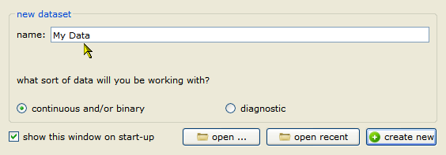
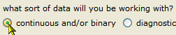
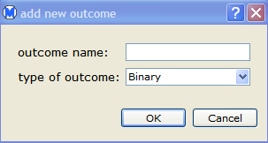
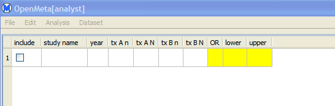
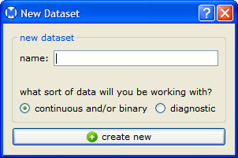

To create a new data set in the Welcome to OpenMeta dialog, do the following steps.


In this example, the data type is binary. See Data Types for description of the data types available in Open Meta-Analyst.

The Open Meta-Analyst window now displays a row of fields where you can enter data for a study. For binary data, the row appears as shown below.

Note: Once you have closed the Welcome to OpenMeta dialog, you can create a new data set by selecting new dataset from Dataset menu. This opens a the New Dataset dialog, in which you can create a data set by the same steps as described above.

| Starting Open Meta-Analyst | Entering and Saving Data | |